这是本次爬取的网址：https://weibo.com/
一、请求分析
找到登录的位置，填写用户名密码进行登录操作
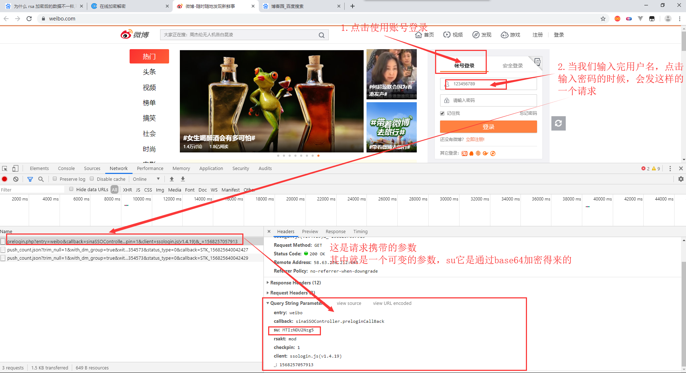
看看这次请求响应的数据是什么
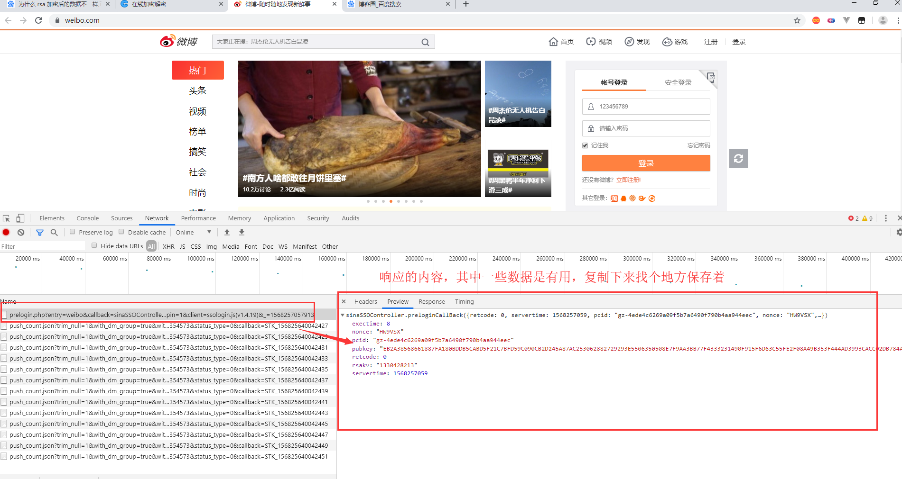
这是响应得到的数据，保存下来
exectime: 8
nonce: "HW9VSX"
pcid: "gz-4ede4c6269a09f5b7a6490f790b4aa944eec"
pubkey: "EB2A38568661887FA180BDDB5CABD5F21C7BFD59C090CB2D245A87AC253062882729293E5506350508E7F9AA3BB77F4333231490F915F6D63C55FE2F08A49B353F444AD3993CACC02DB784ABBB8E42A9B1BBFFFB38BE18D78E87A0E41B9B8F73A928EE0CCEE1F6739884B9777E4FE9E88A1BBE495927AC4A799B3181D6442443"
retcode: 0
rsakv: "1330428213"
servertime: 1568257059继续完善登录操作，输入密码，点击登录按钮
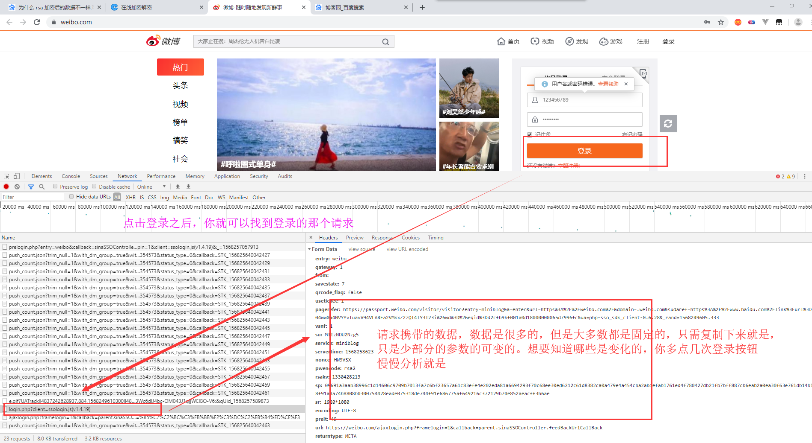
经过分析呢，发现变化的参数就是sp,nonce,servetime。servetime就是当前的时间戳，我们只需找到其他两个参数的生成方法就好了。对了su这个参数是通过base64加密生成的
二、找到sp,nonce的加密方式
这次就不通过search关键字去找加密位置了
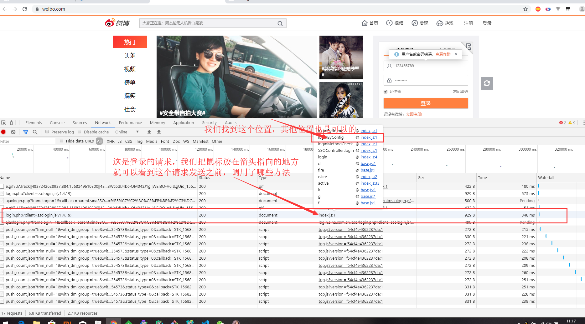
找到调用函数的位置，打上断点，再进行登录操作
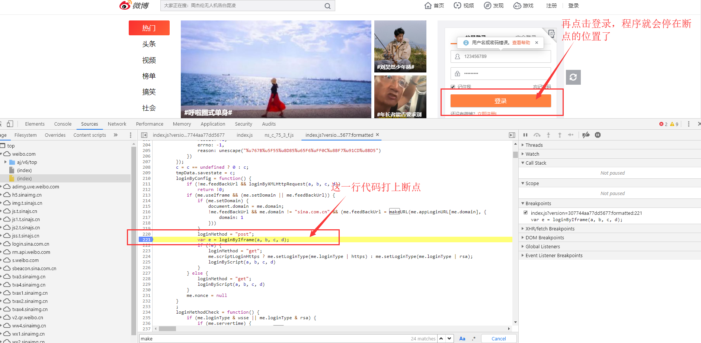
经过js代码流程调试分析，最终我们找到了加密的位置
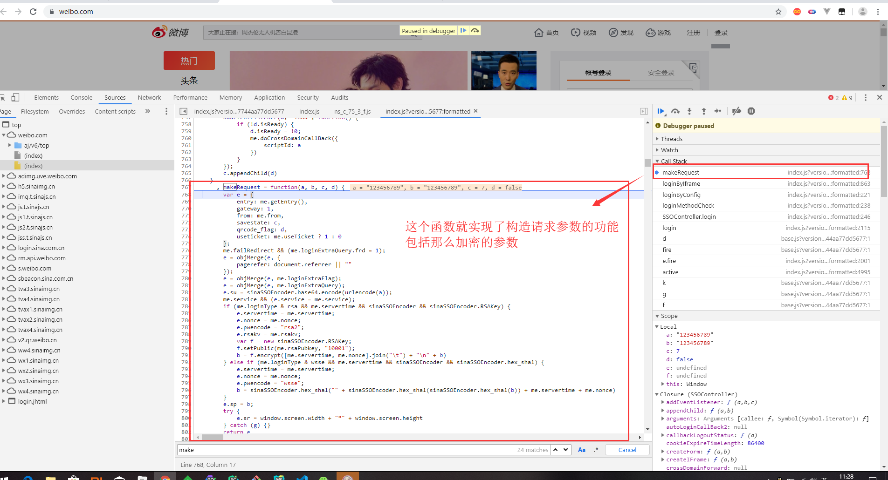
简单介绍下怎么调试js代码
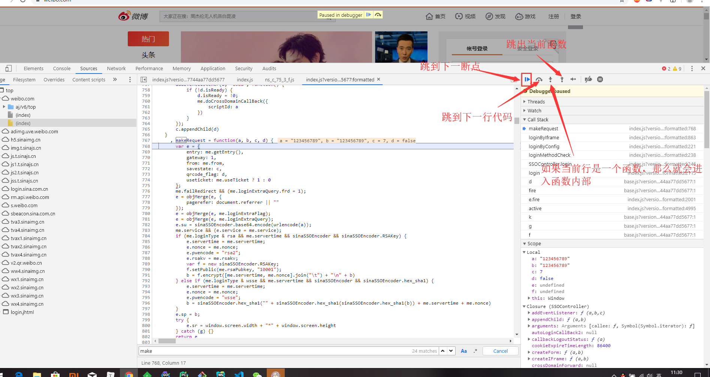
找到sp,nonce的位置，通过python代码去实现它的加密方式
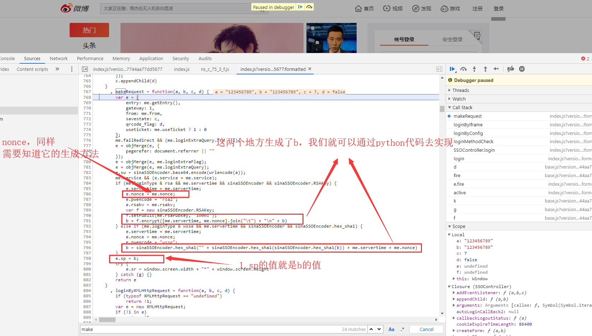
sp它是通过rsa加密方式，加密生成的。rsa的具体用法可以通过百度找到。或者通过sha1加密生成。至于me.rsaPubkey他怎么得到的，他就是我们还没有点击登录前，就发了一个请求，那个请求的响应数据就有它。如果你测试的次数多了的话，会发现这个值它是固定下来的。所以我们也可以直接去用，不用请求获取。
nonce：它呢也出现过在未点击登录前的那个请求响应的数据中，但是呢，我们点了几次登录，都未发现这个请求了。nonce的值每次还不一样。所以它肯定是本地js文件的某个函数生成，不用请求服务器获取。我们在这里找到了nonce的生成函数
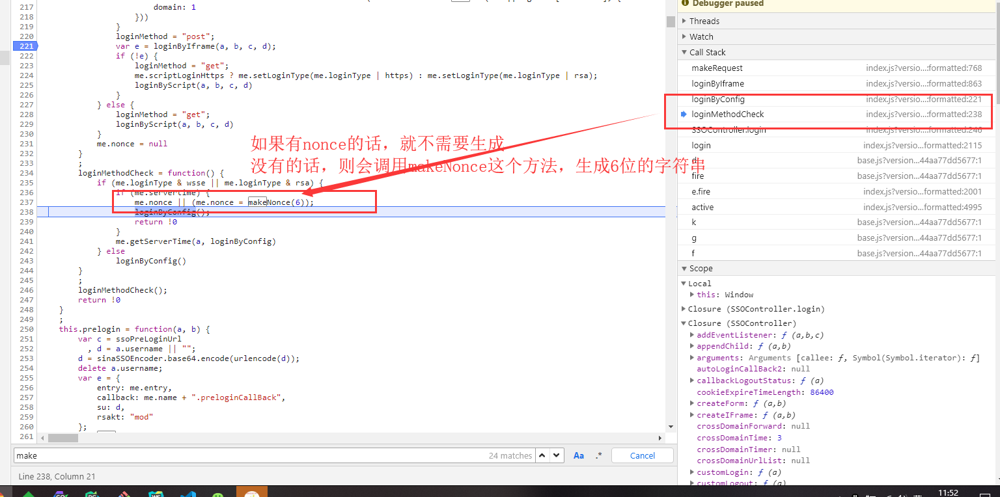
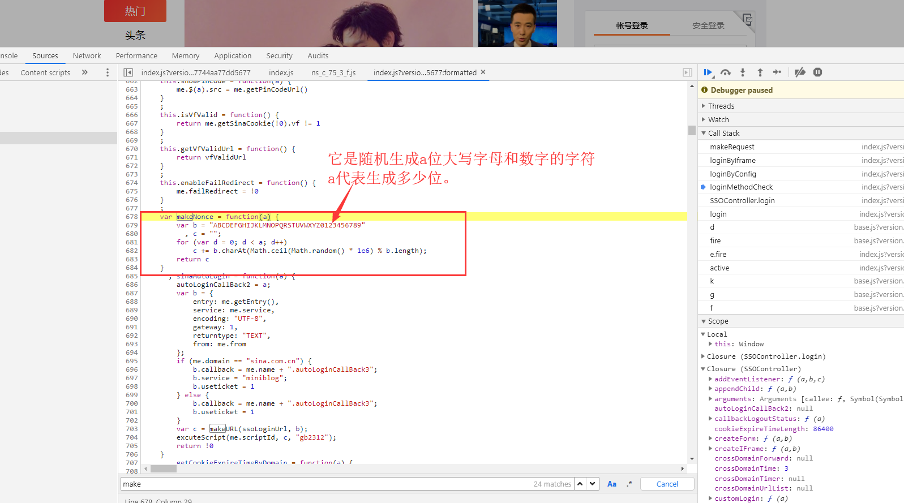
import random
import rsa
import hashlib
from binascii import b2a_hex
def get_nonce(n):
result = ""
random_str = "ABCDEFGHIJKLMNOPQRSTUVWXYZ0123456789"
for i in range(n):
index = random.randint(0, len(random_str) - 1)
result += random_str[index]
return result
def get_sp_rsa(password, servertime, nonce):
key = "EB2A38568661887FA180BDDB5CABD5F21C7BFD59C090CB2D245A87AC253062882729293E5506350508E7F9AA3BB77F4333231490F915F6D63C55FE2F08A49B353F444AD3993CACC02DB784ABBB8E42A9B1BBFFFB38BE18D78E87A0E41B9B8F73A928EE0CCEE1F6739884B9777E4FE9E88A1BBE495927AC4A799B3181D6442443"
pubkey = rsa.PublicKey(int(key, 16), int("10001", 16))
res = rsa.encrypt(bytes("" + "\t".join([servertime, nonce]) + "\n" + password,encoding="utf-8"), pubkey)
return b2a_hex(res)
def get_sp_sha1(password, servertime, nonce):
res = hashlib.sha1(bytes("" + hashlib.sha1(bytes(hashlib.sha1(bytes(password, encoding="utf-8")).hexdigest(),encoding="utf-8")).hexdigest() + servertime + nonce,encoding="utf-8")).hexdigest()
return res三、响应数据
请求参数分析的差不多了，这次输入正确的用户名，密码。查看响应的数据的是什么。
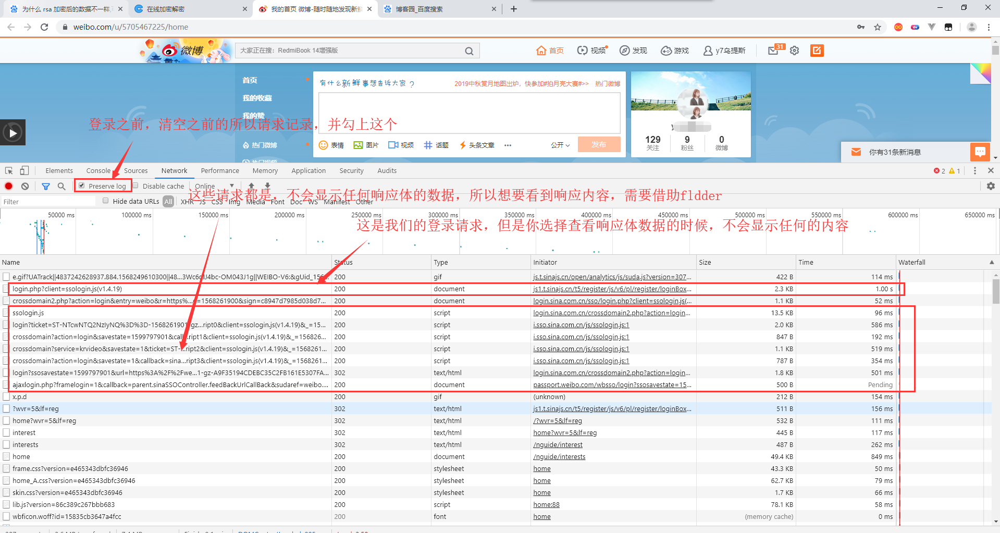
打开fiddler，然后退出当前账号，重新进行登录操作。fiddler上面就会出现很多请求。找到需要的请求，看看响应内容
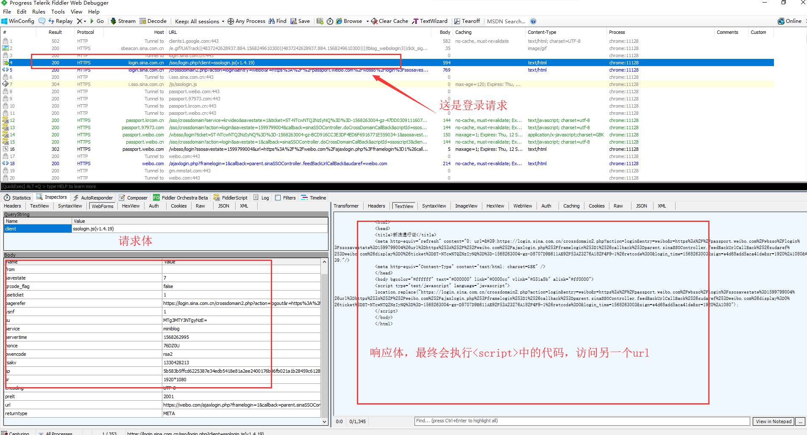
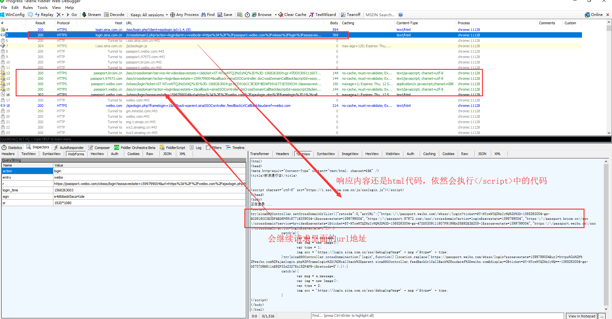
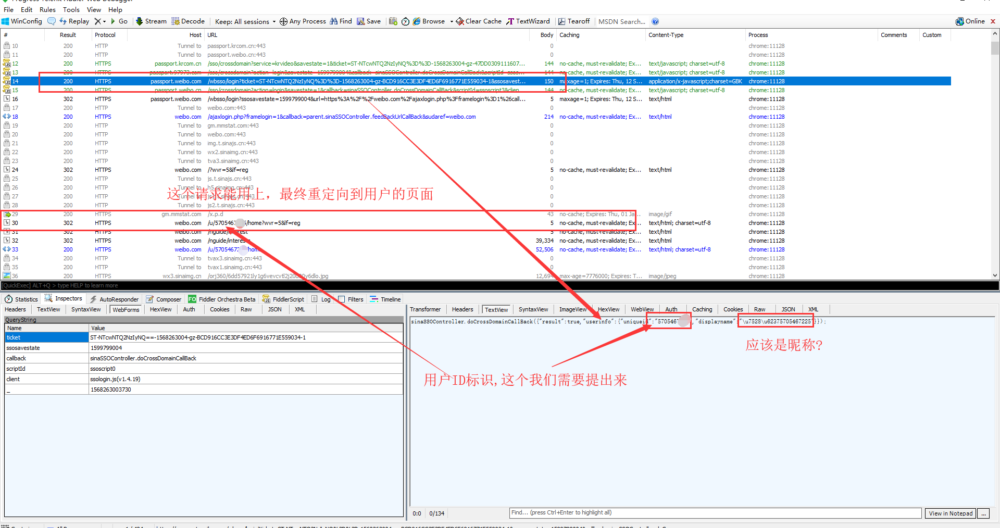
这样做，每个响应都会set-cookie。所以照着上面的流程实现，标识登录的cookie肯定能得到。之后的话，只要带上这个cookie去做其他操作就行了。
最后附上代码
import requests, random, time, rsa, hashlib, base64, re, json
from binascii import b2a_hex
class WeiBo:
def __init__(self):
self.session = requests.Session()
self.headers = {
"user-agent": "Mozilla/5.0 (Windows NT 10.0; Win64; x64) AppleWebKit/537.36 (KHTML, like Gecko) Chrome/76.0.3809.132 Safari/537.36"
}
def login(self, account, password):
api = "https://login.sina.com.cn/sso/login.php?client=ssologin.js(v1.4.19)"
nonce = self._get_nonce()
servertime = self._get_now_time()
sp = self._get_sp_rsa(password, servertime, nonce)
su = self._get_su(account)
data = {
"entry": "weibo",
"gateway": "1",
"from": "",
"savestate": "7",
"qrcode_flag": "false",
"useticket": "1",
"pagerefer": "https://login.sina.com.cn/crossdomain2.php?action=logout&r=https%3A%2F%2Fpassport.weibo.com%2Fwbsso%2Flogout%3Fr%3Dhttps%253A%252F%252Fweibo.com%26returntype%3D1",
"vsnf": "1",
"su": su,
"service": "miniblog",
"servertime": servertime,
"nonce": nonce,
"pwencode": "rsa2",
"rsakv": "1330428213",
"sp": sp,
"sr": "1920*1080",
"encoding": "UTF - 8",
"prelt": "149",
"url": "https://weibo.com/ajaxlogin.php?framelogin=1&callback=parent.sinaSSOController.feedBackUrlCallBack",
"returntype": "META",
}
headers = self.headers.copy()
headers.update({
"Host": "login.sina.com.cn",
"Origin": "https://weibo.com",
"Referer": "https://weibo.com/"
})
response = self.session.post(api, headers=headers, data=data, allow_redirects=False)
search_result = self._re_search("location.replace\(\"(.*?)\"", response.text)
redirct_url = search_result and search_result.group(1)
if not redirct_url:
raise Exception("重定向url获取失败")
response = self.session.get(redirct_url, headers=headers.update({
"Referer": "https://login.sina.com.cn/sso/login.php?client=ssologin.js(v1.4.19)"
}), allow_redirects=False)
search_result = self._re_search('"arrURL":(.*?)}', response.text)
redirct_urls = search_result and search_result.group(1)
if not redirct_urls:
raise Exception("重定向url获取失败")
redirct_url_list = json.loads(redirct_urls)
userId = ""
for url in redirct_url_list:
response = self.session.get(url, headers=self.headers)
if url.startswith("https://passport.weibo.com/wbsso/login"):
userId = self._re_search('"uniqueid":"(.*?)"', response.text).group(1)
if not userId:
raise Exception("userId获取失败")
user_details_url = "https://weibo.com/u/{}/home?wvr=5&lf=reg".format(userId)
response = self.session.get(user_details_url, headers={
"Referer": "https://weibo.com/",
"user-agent": "Mozilla/5.0 (Windows NT 10.0; Win64; x64) AppleWebKit/537.36 (KHTML, like Gecko) Chrome/76.0.3809.132 Safari/537.36"
})
if self._re_search(userId, response.text):
print("登录成功")
print(self.session.cookies)
else:
print("登录失败")
def _get_nonce(self):
nonce = ""
random_str = "ABCDEFGHIJKLMNOPQRSTUVWXYZ0123456789"
for i in range(5):
index = random.randint(0, len(random_str) - 1)
nonce += random_str[index]
return nonce
def _get_now_time(self):
return str(int(time.time()))
def _get_sp_rsa(self, password, servertime, nonce):
key = "EB2A38568661887FA180BDDB5CABD5F21C7BFD59C090CB2D245A87AC253062882729293E5506350508E7F9AA3BB77F4333231490F915F6D63C55FE2F08A49B353F444AD3993CACC02DB784ABBB8E42A9B1BBFFFB38BE18D78E87A0E41B9B8F73A928EE0CCEE1F6739884B9777E4FE9E88A1BBE495927AC4A799B3181D6442443"
pubkey = rsa.PublicKey(int(key, 16), int("10001", 16))
res = rsa.encrypt(bytes("" + "\t".join([servertime, nonce]) + "\n" + password, encoding="utf-8"), pubkey)
return b2a_hex(res)
def _get_sp_sha1(self, password, servertime, nonce):
res = hashlib.sha1(bytes("" + hashlib.sha1(bytes(hashlib.sha1(bytes(password, encoding="utf-8")).hexdigest(),
encoding="utf-8")).hexdigest() + servertime + nonce,
encoding="utf-8")).hexdigest()
return res
def _get_su(self, account):
return str(base64.b64encode(bytes(account, encoding="utf-8")), encoding="utf-8")
def _re_search(self, pattern, html):
return re.search(pattern, html, re.S)
def test(self):
self.login("18716758777", "123456")
if __name__ == '__main__':
wb = WeiBo()
wb.test()